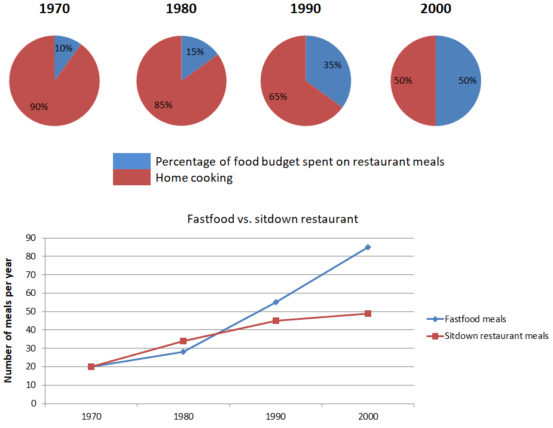

You should spend about 20 minutes on this task.
The chart below shows the percentage of their food budget the average
family spent on restaurant meals in different years. The graph shows the
number of meals eaten in fast food restaurants and sit-down restaurants.
Summarize the information by selecting and reporting the main features, and
make comparisons where relevant.
Write at least 150 words.
You should spend about 40 minutes on this task.
Some people feel that manufacturers and supermarkets have the responsibility to reduce the amount of packaging of goods. Others argue that customers should avoid buying goods with a lot of packaging. Discuss both views and give your opinion.
You should write at least 250 words